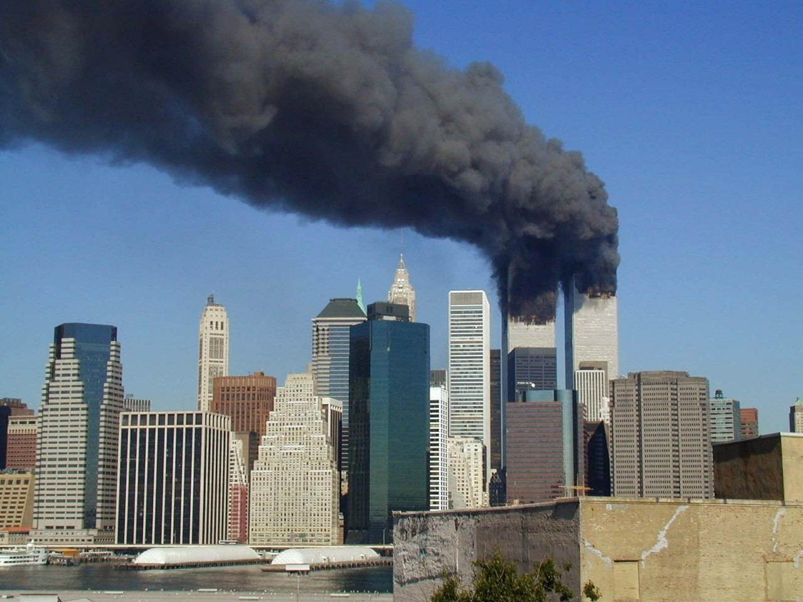
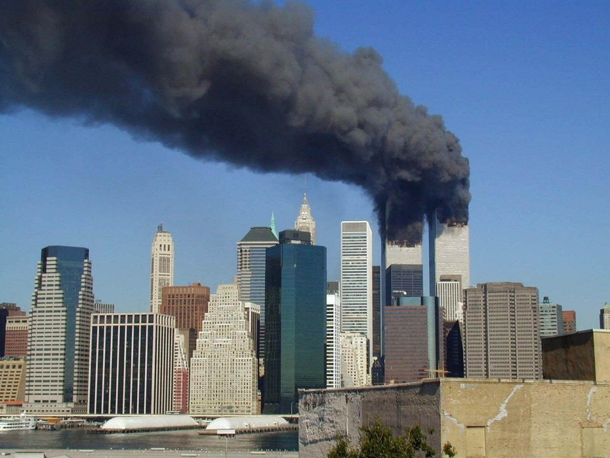

Causas del Atentado
El atentado fue perpetrado por el grupo terrorista Al Qaeda. Las causas principales incluyeron conflictos geopolíticos, presencia militar de Estados Unidos en Medio Oriente y una ideología extremista religiosa y política.
- Conflictos en Medio Oriente
- Presencia militar de EE.UU. en Arabia Saudita
- Oposición a políticas exteriores estadounidenses
- Interpretación extremista del Islam: Al Qaeda promovía una visión radical del islamismo, creyendo que era su deber luchar contra lo que percibían como una invasión cultural, política y militar de Occidente en tierras musulmanas.
- Yihad contra Occidente: Consideraban a Estados Unidos como el principal enemigo del islam, especialmente por su apoyo a Israel, su presencia militar en países musulmanes y su influencia cultural.
- Presencia militar estadounidense en Medio Oriente: Tras la Guerra del Golfo (1991), EE. UU. mantuvo bases militares en Arabia Saudita, tierra considerada sagrada por los musulmanes. Esto fue una gran fuente de resentimiento.
- Apoyo a regímenes considerados opresores: Estados Unidos apoyó a gobiernos autoritarios en países árabes como Egipto y Arabia Saudita, lo cual fue percibido como una hipocresía y una opresión contra los musulmanes.
- Conflicto israelo-palestino: El firme respaldo de EE. UU. a Israel frente a los palestinos fue visto como una injusticia por muchos en el mundo musulmán y un símbolo del dominio occidental.
- Revancha y propaganda
- Propaganda y reclutamiento: El ataque fue también una forma de demostrar poder y atraer más seguidores al movimiento yihadista radical.
-
Presencia militar de EE. UU. en Medio Oriente:
La instalación de bases militares estadounidenses en países musulmanes como Arabia Saudita fue considerada por grupos extremistas como una invasión de territorios sagrados.
-
Política exterior estadounidense:
El apoyo constante de Estados Unidos a Israel en el conflicto palestino-israelí fue visto como una agresión directa contra los musulmanes, lo cual alimentó el resentimiento hacia el país.
-
Ideología yihadista de Al-Qaeda:
El grupo extremista Al-Qaeda, liderado por Osama bin Laden, promovía una visión radical del islam que justificaba la violencia contra Occidente para establecer un califato islámico.
-
Venganza por intervenciones pasadas:
Las intervenciones militares estadounidenses en Irak y Afganistán, así como el apoyo a gobiernos autoritarios en la región, motivaron a grupos como Al-Qaeda a planificar represalias.
-
Globalización y simbolismo económico:
Las Torres Gemelas representaban el poder económico de Estados Unidos. Atacarlas fue un acto simbólico para golpear el corazón financiero del país.
- Causas ideológicas y religiosas
- Causas geopolíticas e históricas
xRevancha por intervenciones pasadas: Al Qaeda consideraba que EE. UU. había causado sufrimiento y destrucción en tierras musulmanas a través de guerras, sanciones económicas y apoyo militar a dictaduras.
 

El ataque del 11 de septiembre de 2001 fue el resultado de múltiples factores políticos, ideológicos y estratégicos. A continuación, se detallan algunas de las causas más relevantes: